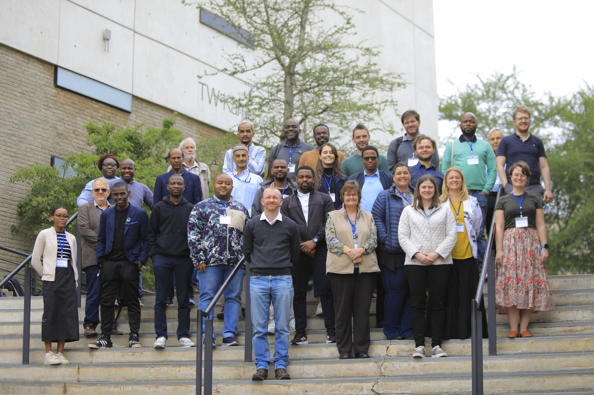

Talks & presentations
Invited seminars, conference presentations and workshops on numerical methods, fluid dynamics and computational mathematics.

Selected talks
-
May 2025Numerical methods: the unsung heroes of scientific computing
-
Apr 2025Sensitivity and numerical simulation of unsteady reactive hydromagnetic Eyring–Powell flow in a non-horizontal channel
-
Dec 2024Adaptive multidomain numerical solution for singularly perturbed fractional differential equations: Chebyshev pseudospectral method
-
Aug 2024Exploring fluid dynamics: the role of mathematicians
-
Jul 2024Thermal analysis of extended surfaces using deep neural networks
-
Nov 2022Finite difference methods for the Burgers–Huxley equation and biofilm formation
-
Sep 2020On the numerical solution of the 2D Burgers–Huxley equation using NSFD and classical methods
-
Jun 2016An oscillatory MHD convection flow past an infinite vertical porous plate with variable suction, radiation and heat generation in the presence of chemical reaction